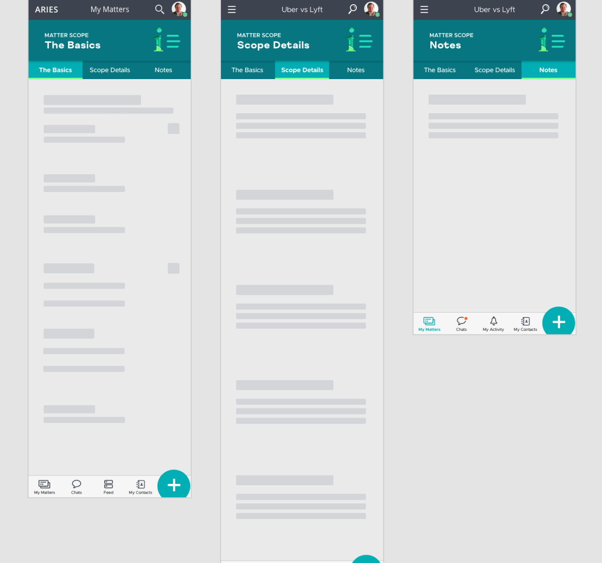
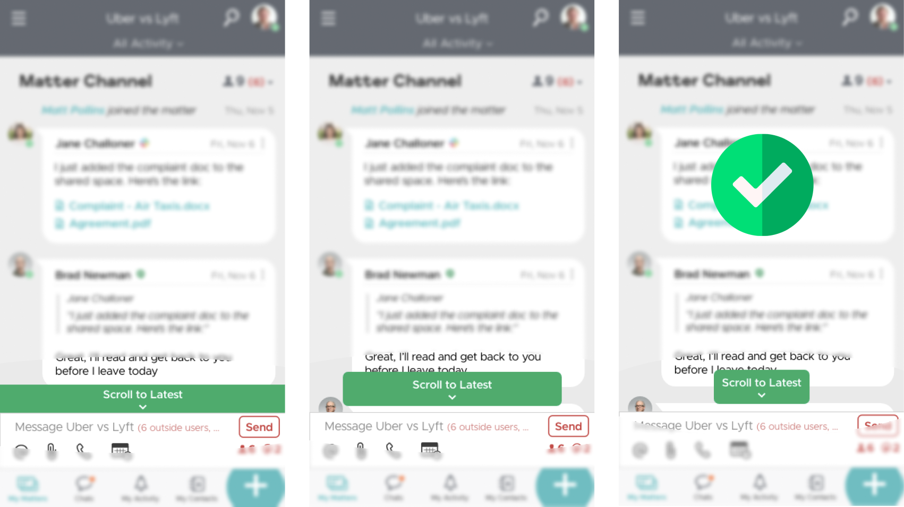
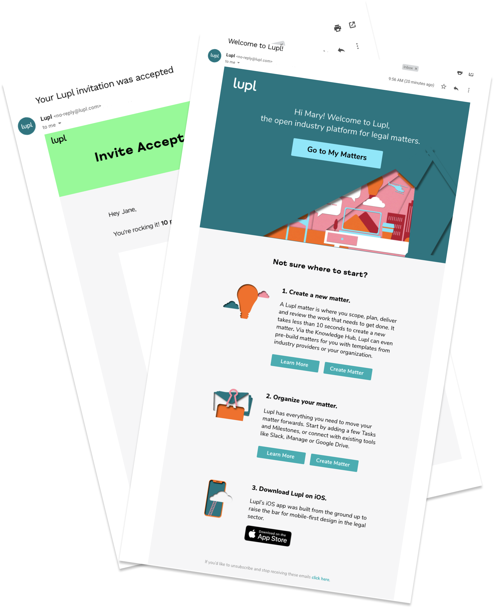
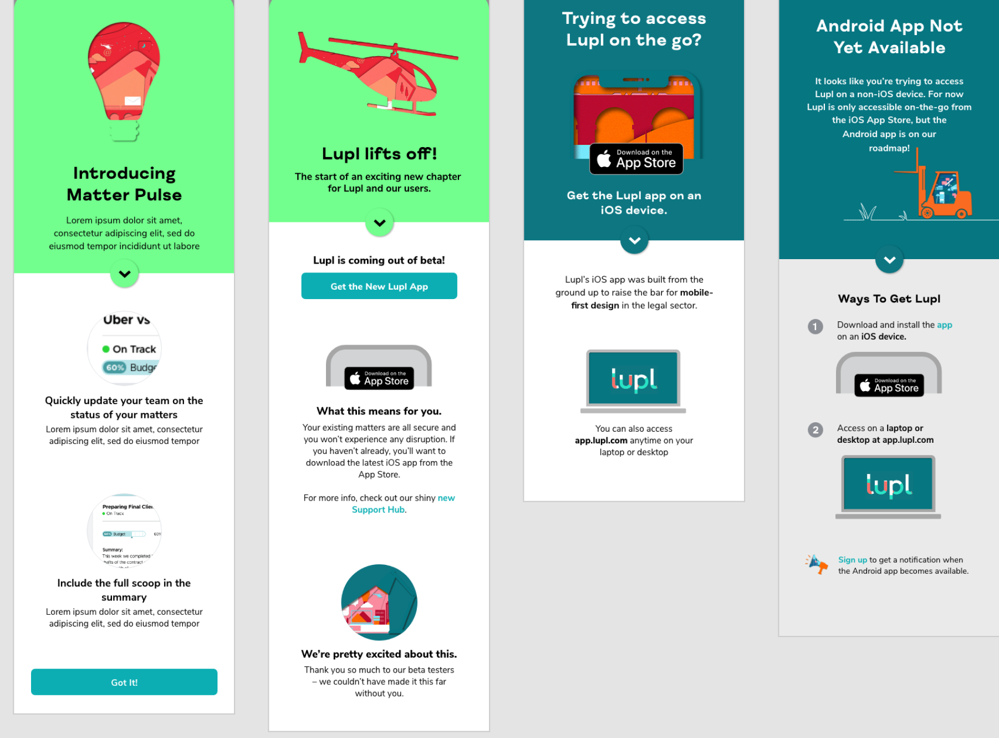
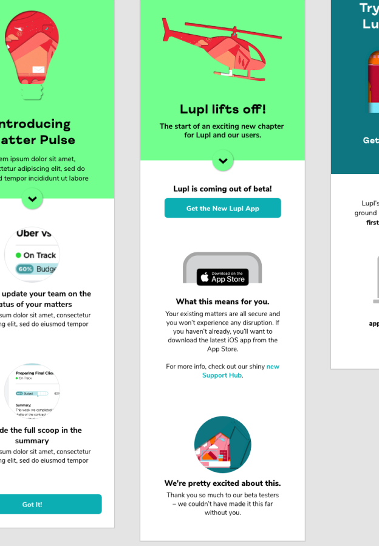

Mission: Make real-time communication and matter collaboration seamless.
Term to know
Matter: any dispute regarding the rights or obligations of a Party that arise out of an agreement.
Work on Lupl Begins (2019)
I join the Lupl project (2020)
“Make everyday work simpler and more productive for lawyers around the world.”
Problems to Solve:
Users need flexible and lightweight “at a glance” matter management and light project management
tools that don’t require a lot of time to understand and update.
Users are constantly being asked to group-identify, e.g. buyer side, selling side, etc., and each group,
even within firms, has preferred systems. Users need a way to break down these walls and operate efficiently
over a variety of systems.
Onboarding
Familiarizing myself with:
Research & Analysis
User Interface
Dev
Work as a Jr. Designer
Skeleton Screens
Exporting New Assets
Fetching Existing Assets for Coders
Updating & Organizing Components in XD
Promoted to Designer (Dec '20)
Creating Simple Designs
Implementing Design Feedback
Writing and Designing Emails
Designing New Informative Screens
 Researching & designing New Capabilities like...
Preview of the Final Product
User Problem
I need to see and manipulate files efficiently within my cloud storage, and I don’t want to switch apps. E.g. I don’t want to navigate to Google Drive to perform these actions.
Solution
Design a Document Profile that gives users the ability to preview and manipulate files from the existing documets list
Feedback Received on Sketches
While in early stages of development, the product design team had been referring to this feature as “document profile,” which I carried into the design. However, that terminology would hold little to no importance to users without any onboarding. At the same time, the file name lacked attention.
Feedback Implementation
‘Document Profile’ was removed from the header and the file name was given prominence.
Client Feedback
‘Document preview feels crowded. Want this to resemble preview within Google Drive where the document content is the focus.’
Tough Decisions
Much of the app’s value is in the various options for sharing, updating, and collaborating on a document that are specific to the law profession. Our research - interviews and surveys - showed that users were less technologically intuitive than many apps in the space were assuming, so I didn’t want to get rid of the helpful, value-adding option menu that had clear icons and names (i.e. descriptions) for each action.
26% of users surveyed labeled themselves as “not very tech savvy”
I and the lead designer were ultimately overruled after voicing the concern, but of course we did not take it personally because it’s part of the natural give-and-take of working in a team and in product development where interpretation is everything.
I moved forward by accommodating the client’s wishes, putting focus on the document content, and doing my best to put the actions where users could find them. Coincidentally, a few months later, when a new product designer came onboard, the screen was changed (back) to something more similar the design I had advocated for.
A tab version to give the content more space:
Becoming Team(s™) Lead
How it Happened
In May, our project added an entirely new market, and I was promoted to the co-lead UX Designer for the existing app as well as the lead designer for the Lupl for Microsoft Teams™ app. I worked with a team of about 5 developers and presented my designs directly to the COO of Lupl.
Being the go-to UX voice at a multitude of meetings
Resolving Old Bugs
Finishing designs for the general app capabilities I had already begun
Getting up-to-speed with the UX/UI of Teams™
Designing new Teams user flows, mockups, and prototypes
Collaborating with developers on the slew of technical impediments native to and unique to Teams™
How did it go?
The combined effort of the above tasks was very difficult at first. It was a trial by fire of balancing user feedback, client requests, technological limitations,
and time constraints.
However, I was lucky to work with some of the most talented (and humorous!) people in the business who supported me while we all worked to create an app that
met user needs in the time allotted.
Permissions were the #1 priority
Context
This screen is a step in a solution for a complex Teams <> Lupl interaction. Because of the importance of confidentiality within legal matters, credentials and permissions must be constantly checked and easy to update for admins. This admin user story was often in direct competition with another admin user story: I need to easily invite a channel of people on Teams to a matter on Lupl. Essentially: Security vs Ease. One of the most common problems facing designers.
Edge Case
MIn this screen, we encounter a setback arising from the capability of an admin to easily add a channel of people in Teams to a matter in Lupl. We determined that a channel of
people would be auto-added to a matter when a Lupl Tab was added in said Teams channel. However, what if one of the users was already on Lupl? Usually not an issue, but...
Taking into account all possible user needs...
In the seemingly rare ‘edge case,’ where a lawyer or law professional is 1) already a user within the Lupl system but 2) uses a different email address to sign into Teams and 3) is added to a matter
via Teams and 4) enters their original Lupl credentials when signing into access the Lupl tab on Teams, what should happen?
As you can see on the screen we solved this issue by prioritizing confidentiality and security based on our user story prioritizations. We inform the user that the email addresses they were using
didn’t match and how to fix it as opposed to auto-adding their Lupl creds to the matter, and still not forcing them to exit Teams, a real hassle according to user interviews.
Lupl Launches! (2021)
Officially out of Beta.